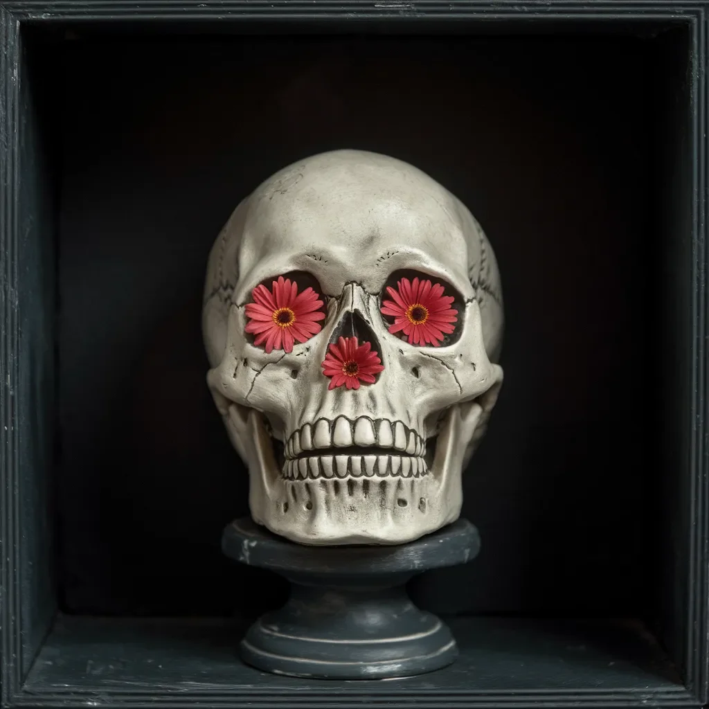

꽃들은 자라나지 않았어야 했다 - 뼈에서도, 겨울에도, 표본실의 어둠 속에서도.
[The flowers shouldn’t have been growing - not from bone, not in winter, not in the dark of the specimen room.]
엘리노어 보스 박사는 어제의 기록을 다시 한 번 확인하며 로그북을 들여다보았다. 도자기 해골 - 유물 #273 - 은 개인 수집가의 유산에서 아무런 화려함이나 꽃도 없이 도착했었다. 하지만 지금 이 해골은 회색빛 받침대 위에 자리 잡고 있었고, 마치 괴상한 정원처럼 눈구멍과 코 구멍에서 세 송이의 완벽한 분홍색 거베라 데이지가 자라나 있었다.
[Dr. Eleanor Voss checked her logbook again, squinting at yesterday’s entry. The porcelain skull - Artifact #273 - had arrived from a private collector’s estate without fanfare or flowers. Yet here it perched on its slate-gray pedestal, three perfect pink gerbera daisies sprouting from its sockets and nasal cavity like some macabre garden.]
그녀는 라텍스 장갑을 낀 채로 떨리는 손으로 한 송이를 향해 손을 뻗었다. 방의 영원한 한기에도 불구하고 꽃잎은 따뜻하고 비단결 같은 감촉이 실제처럼 느껴졌다. 각 꽃의 중심부는 마치 지켜보는 듯한 어두운 눈이었다.
[She reached toward one bloom, her latex glove trembling. The petals felt real - warm and silken, despite the room’s perpetual chill. The center of each flower was a dark eye, watching.]
“놀라운 표본이죠, 그렇지 않나요?” 그녀의 뒤에서 들린 목소리는 새로 온 보조 큐레이터 마커스 웹의 것이었다. “하지만 오늘 아침에는 분명 하얀색이었던 것 같은데요.”
[“Remarkable specimen, isn’t it?” The voice behind her belonged to Marcus Webb, her new assistant curator. “Though I could swear they were white this morning.”]
엘리노어의 손이 홱 뒤로 물러났다. “하얀색이라고요?”
[“Eleanor’s hand jerked back. "White?”]
“뼈처럼 하얬죠,” 그가 해골을 자세히 살펴보기 위해 더 가까이 다가오며 말했다. “근데 지금은 분홍색이네요. 거의 산호색에 가깝게요.”
[“Like bone,” he said, moving closer to study the skull. “Now they’re pink. Almost coral.”]
보안 영상에서는 특이한 점이 없었다 - 진열장 안의 해골만이 시간이 흐르는 동안 정적 속에 있을 뿐이었다. 하지만 새벽 3시 17분에 영상이 깜빡였다. 화면이 안정되었을 때, 꽃들은 마치 늘 그 빈 눈구멍에서 자라고 있었던 것처럼 완전한 형태로 거기에 있었다.
[The security footage showed nothing unusual - just the skull in its display case, hour after hour of stillness. But at 3:17 AM, the video flickered. When the image stabilized, the flowers were there, fully formed, as if they’d always been growing from those empty sockets.]
그 다음 주 동안, 꽃들은 색깔이 변했다 - 자정에는 핏빛처럼 붉었다가, 새벽에는 연한 장미색이 되었고, 황혼녘에는 진한 진홍색이 되었다. 엘리노어는 잠을 자지 않았고, 사무실에 간이 침대를 설치했다. 그녀는 매 변화를 기록하고, 꽃잎 길이를 측정하고, 존재하지 않는 흙 표본을 검사했다. 매끄러운 도자기만 있을 뿐 흙은 없었기 때문이었다.
[Over the next week, the blooms changed colors - blood red at midnight, pale rose at dawn, deep crimson by dusk. Eleanor stopped sleeping, installing a cot in her office. She cataloged each transformation, measured petal lengths, tested soil samples that didn’t exist because there was no soil, only smooth porcelain.]
수집가의 미망인이 목요일에 전화를 걸어왔다. “미리 경고했어야 했는데,” 그녀가 전화기 너머로 탁탁 갈라지는 목소리로 말했다. “해롤드는 늘 저것이 배고프다고 했어요. 그래서 먹이를 주곤 했죠.”
[The collector’s widow called on Thursday. “I should have warned you,” she said, her voice crackling over the phone. “Harold always said it was hungry. That’s why he fed it.”]
“먹이라뇨, 무엇을요?”
[“Fed it what?”]
“추억들이요. 행복한 것들 말이에요. 아시다시피, 해골이 그것들을 가져가고 대신 꽃을 줘요. 서로 다른 감정에 따라 다른 색깔의 꽃으로요. 해롤드는 그게 공평한 거래라고 했죠.”
[“Memories. Happy ones. The skull takes them, you see, and gives flowers in return. Different colors for different emotions. Harold said it was a fair trade.”]
엘리노어의 손이 저절로 관자놀이로 향했다. 그곳의 머리카락이 회색으로 변하기 시작했다. 최근 들어 그녀는 기억하는 것이 힘들어졌다 - 어머니의 얼굴, 첫 키스, 바다 파도 소리까지. 작은 추억들이 손바닥의 물처럼 빠져나가고 있었다.
[Eleanor’s hand drifted to her temple, where her hair had begun graying. Lately, she’d been having trouble remembering things - her mother’s face, her first kiss, the sound of ocean waves. Small memories, slipping away like water through cupped hands.]
그녀는 마커스가 아침에 하얀 꽃에 대해 언급했던 것을 떠올렸다 - 하지만 나중에 그에게 물어봤을 때, 그는 그런 말을 한 적이 전혀 없다고 했다.
[She thought of Marcus mentioning white flowers that morning - but when she asked him about it later, he didn’t remember saying anything at all.]
데이지들은 이제 멍든 것처럼 진한 보라색으로 변해가고 있었다. 엘리노어는 그 꽃들이 어두워지는 것을 지켜보며, 어떤 기억이 이런 색을 만들어냈는지, 해골이 어떤 즐거운 순간을 삼켜서 이런 색을 만들어냈는지 궁금해했다. 그녀는 기억해내지 못했지만, 그것이 분명 아름다웠을 거라는 걸 알았다.
[The daisies were deepening to purple now, rich as bruises. Eleanor watched them darken and wondered which memory they represented, which moment of joy the skull had consumed to create such a color. She couldn’t recall, but she knew it must have been beautiful.]
표본실 구석에는 그녀의 로그북이 펼쳐져 있었는데, 맨 위에 한 줄 “꽃들은 자라나지 않았어야 했다"라는 문장을 제외하고는 모든 페이지가 비어 있었다.
[In the corner of the specimen room, her logbook lay open, its pages blank except for a single line at the top: "The flowers shouldn’t have been growing.”]
그녀는 그것을 썼던 기억이 없었다.
[She didn’t remember writing it.]